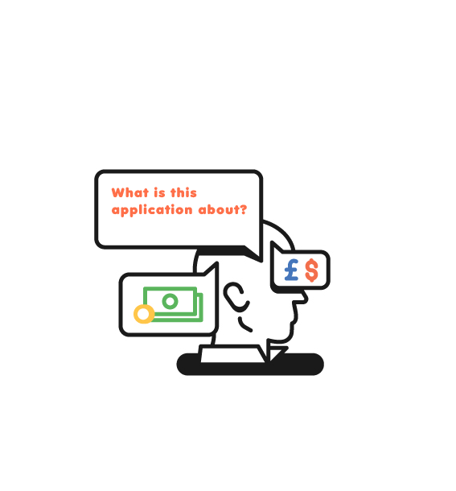
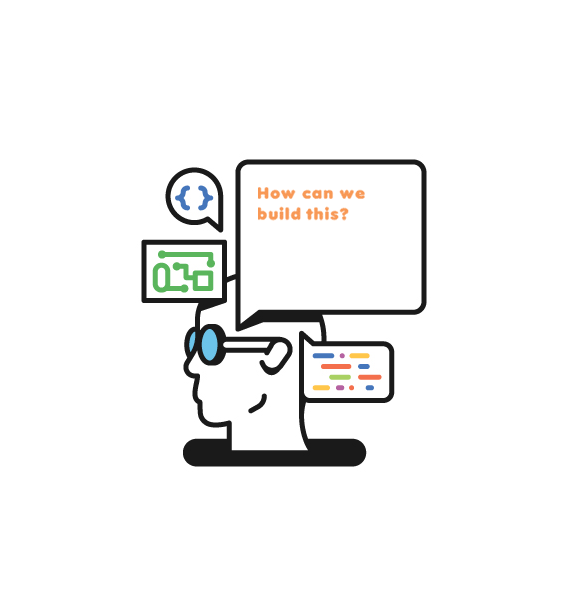
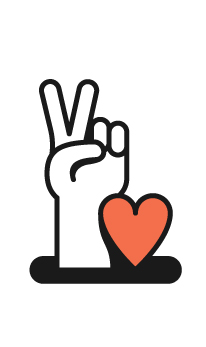

Helping teams define and measure application behaviour is our thing, but the behaviour of people on a project is also worth thinking about:
Project stakeholders and roles have various perspectives [and ask different questions] of the software we build. The most infamous being the gap between business and tech heads
 All considerations are potentially valid. We think it shouldn’t only be the job of one 'stakeholder’ to devise requirements. This task can be split out between all parties who have a stake/interest.
So we deliberately promote conversations about application behaviours and desired business impacts.
The process of specifying behaviours via examples:
- Focuses attention - no more vague requirement lists
- Begets more examples and sparks ideas
- Gets team members speaking the same language - bridging communication gaps
A simple process which leads to higher performing, happier teams
